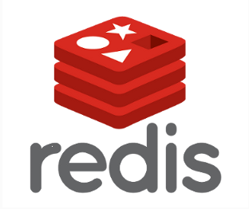

redis的命令集合 & nodejs,php,python,java连接redis

Redis是一个开源的而且先进的key-value存储库，主要用于构建高性能的存储解决方案。redis主要承担的任务是缓存。由于数据是存储于内存中，所以具有很高速的读写性能。
这里记录了redis的一些常用的命令参考，以及nodejs,php,python,java连接redis的方式。
连接操作相关的命令
quit：关闭连接（connection）
auth：简单密码认证
持久化
save：将数据同步保存到磁盘
bgsave：将数据异步保存到磁盘
lastsave：返回上次成功将数据保存到磁盘的Unix时戳
shundown：将数据同步保存到磁盘，然后关闭服务
远程服务控制
info：提供服务器的信息和统计
monitor：实时转储收到的请求
slaveof：改变复制策略设置
config：在运行时配置Redis服务器
对value操作的命令
exists(key)：确认一个key是否存在
del(key)：删除一个key
type(key)：返回值的类型
keys(pattern)：返回满足给定pattern的所有key
randomkey：随机返回key空间的一个
keyrename(oldname, newname)：重命名key
dbsize：返回当前数据库中key的数目
expire：设定一个key的活动时间（s）
ttl：获得一个key的活动时间
select(index)：按索引查询
move(key, dbindex)：移动当前数据库中的key到dbindex数据库
flushdb：删除当前选择数据库中的所有key
flushall：删除所有数据库中的所有key
对String操作的命令
set(key, value)：给数据库中名称为key的string赋予值value
get(key)：返回数据库中名称为key的string的value
getset(key, value)：给名称为key的string赋予上一次的value
mget(key1, key2,…, key N)：返回库中多个string的value
setnx(key, value)：添加string，名称为key，值为value
setex(key, time, value)：向库中添加string，设定过期时间time
mset(key N, value N)：批量设置多个string的值
msetnx(key N, value N)：如果所有名称为key i的string都不存在
incr(key)：名称为key的string增1操作
incrby(key, integer)：名称为key的string增加integer
decr(key)：名称为key的string减1操作
decrby(key, integer)：名称为key的string减少integer
append(key, value)：名称为key的string的值附加value
substr(key, start, end)：返回名称为key的string的value的子串
对List操作的命令
rpush(key, value)：在名称为key的list尾添加一个值为value的元素
lpush(key, value)：在名称为key的list头添加一个值为value的 元素
llen(key)：返回名称为key的list的长度
lrange(key, start, end)：返回名称为key的list中start至end之间的元素
ltrim(key, start, end)：截取名称为key的list
lindex(key, index)：返回名称为key的list中index位置的元素
lset(key, index, value)：给名称为key的list中index位置的元素赋值
lrem(key, count, value)：删除count个key的list中值为value的元素
lpop(key)：返回并删除名称为key的list中的首元素
rpop(key)：返回并删除名称为key的list中的尾元素
blpop(key1, key2,… key N, timeout)：lpop命令的block版本。
brpop(key1, key2,… key N, timeout)：rpop的block版本。
rpoplpush(srckey, dstkey)：返回并删除名称为srckey的list的尾元素，并将该元素添加到名称为dstkey的list的头部
对Set操作的命令
sadd(key, member)：向名称为key的set中添加元素member
srem(key, member) ：删除名称为key的set中的元素member
spop(key) ：随机返回并删除名称为key的set中一个元素
smove(srckey, dstkey, member) ：移到集合元素
scard(key) ：返回名称为key的set的基数
sismember(key, member) ：member是否是名称为key的set的元素
sinter(key1, key2,…key N) ：求交集
sinterstore(dstkey, (keys)) ：求交集并将交集保存到dstkey的集合
sunion(key1, (keys)) ：求并集
sunionstore(dstkey, (keys)) ：求并集并将并集保存到dstkey的集合
sdiff(key1, (keys)) ：求差集
sdiffstore(dstkey, (keys)) ：求差集并将差集保存到dstkey的集合
smembers(key) ：返回名称为key的set的所有元素
srandmember(key) ：随机返回名称为key的set的一个元素
对Hash操作的命令
hset(key, field, value)：向名称为key的hash中添加元素field
hget(key, field)：返回名称为key的hash中field对应的value
hmget(key, (fields))：返回名称为key的hash中field i对应的value
hmset(key, (fields))：向名称为key的hash中添加元素field
hincrby(key, field, integer)：将名称为key的hash中field的value增加integer
hexists(key, field)：名称为key的hash中是否存在键为field的域
hdel(key, field)：删除名称为key的hash中键为field的域
hlen(key)：返回名称为key的hash中元素个数
hkeys(key)：返回名称为key的hash中所有键
hvals(key)：返回名称为key的hash中所有键对应的value
hgetall(key)：返回名称为key的hash中所有的键（field）及其对应的value
-----------------------------------------------------------------------

Node.js连接Redis
将依赖添加到package.json。
{ "dependencies": { "redis": "0.12.1" } }添加代码连接Redis服务。
var redis = require('redis'); /*数据库连接信息host,port,user,pwd,dbname(可查询数据库详情页)*/ var username = '<User_AK>'; //用户AK var password = '<User_SK>'; //用户SK var db_host = 'redis.duapp.com'; var db_port = 80; var db_name = '<DB_Name>'; //数据库名称 console.log(db_host); console.log(db_port); var options = {"no_ready_check":true}; function testRedis(req, res) { var client = redis.createClient(db_port, db_host, options); client.on("error", function (err) { console.log("Error " + err); }); // 建立连接后，在进行集合操作前，需要先进行auth验证 client.auth(username + '-' + password + '-' + db_name); client.set('baidu', 'welcome to BAE'); client.get('baidu', function(err, result) { if (err) { console.log(err); res.end('get error'); return; } res.end('result: ' + result); }); } module.exports = testRedis;
PHP连接Redis
<?php
/*从平台获取数据库名*/
$dbname = "<DB_Name>"; //数据库名称
/*从环境变量里取host,port,user,pwd*/
$host = 'redis.duapp.com';
$port = '80';
$user = '<User_AK>'; //用户AK
$pwd = '<User_SK>'; //用户SK
try {
/*建立连接后，在进行集合操作前，需要先进行auth验证*/
$redis = new Redis();
$ret = $redis->connect($host, $port);
if ($ret === false) {
die($redis->getLastError());
}
$ret = $redis->auth($user . "-" . $pwd . "-" . $dbname);
if ($ret === false) {
die($redis->getLastError());
}
/*接下来就可以对该库进行操作了，具体操作方法请参考phpredis官方文档*/
$redis->flushdb();
$ret = $redis->set("key", "value");
if ($ret === false) {
die($redis->getLastError());
} else {
echo "OK";
}
} catch (RedisException $e) {
die("Uncaught exception " . $e->getMessage());
}
?>
Python连接Redis
#-*- coding:utf-8 -*-
def test_redis():
### 开发者在requirements.txt中指定依赖Redis使用
import redis
### 从管理控制台获取host, port, db_name, api_key, secret_key值
db_name = "<DB_Name>" # 数据库名称
api_key = "<User_AK>" # 用户AK
secret_key = "<User_SK>" # 用户SK
myauth = "%s-%s-%s"%(api_key, secret_key, db_name)
### 连接Redis服务
r = redis.Redis(host = "redis.duapp.com", port = 80, password = myauth)
### 进行各种Redis操作，如set、get
r.set("foo", "bar")
return "get foo=> %s success!"%r.get("foo")
Java连接Redis
import redis.clients.jedis.Jedis;
import java.io.IOException;
import java.io.PrintWriter;
import javax.servlet.ServletException;
import javax.servlet.http.HttpServlet;
import javax.servlet.http.HttpServletRequest;
import javax.servlet.http.HttpServletResponse;
public class RedisBasic extends HttpServlet {
@Override
protected void doGet(HttpServletRequest req, HttpServletResponse resp)
throws ServletException, IOException {
try {
/*****填写数据库相关信息(请查找数据库详情页)*****/
String databaseName = "<DB_Name>"; //数据库名称
String host = "redis.duapp.com";
String portStr = "80";
int port = Integer.parseInt(portStr);
String username = "<User_AK>"; //用户AK
String password = "<User_SK>"; //密码SK
/******接着连接并选择数据库名为databaseName的服务器******/
Jedis jedis = new Jedis(host, port);
jedis.connect();
jedis.auth(username + "-" + password + "-" + databaseName);
/*至此连接已完全建立，就可对当前数据库进行相应的操作了*/
/*接下来就可以使用redis数据库语句进行数据库操作,详细操作方法请参考java-redis官方文档*/
PrintWriter out = resp.getWriter();
//删除所有redis数据库中的key-value
jedis.flushDB();
//简单的key-value设置
jedis.set("name", "bae");
System.out.println("name | " + jedis.get("name"));
} catch (Exception e) {
e.printStackTrace(resp.getWriter());
}
}
}